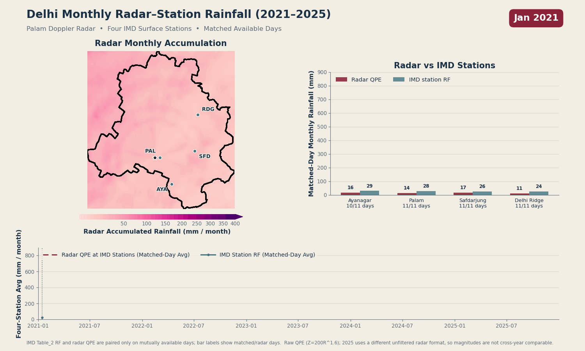
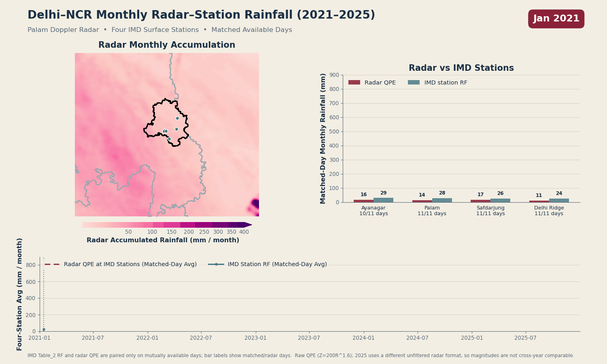
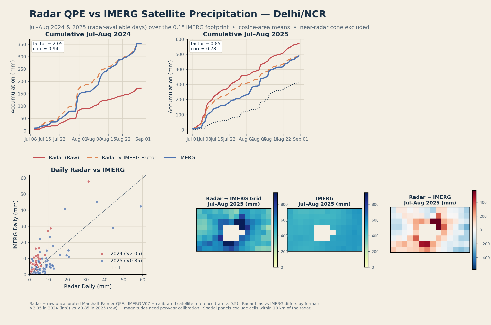
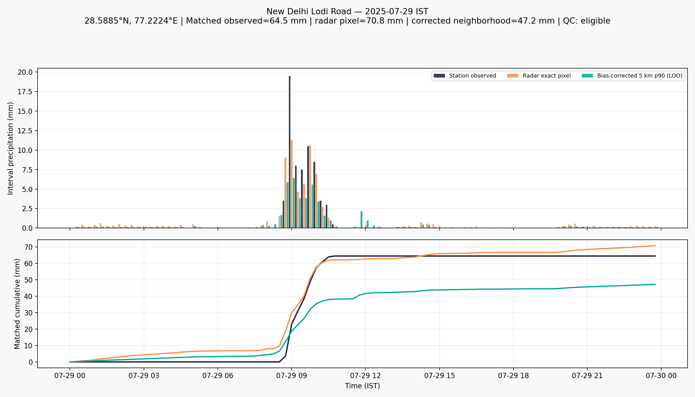
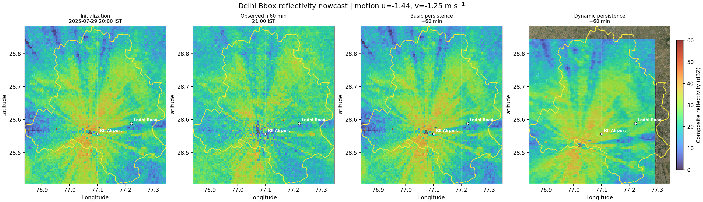
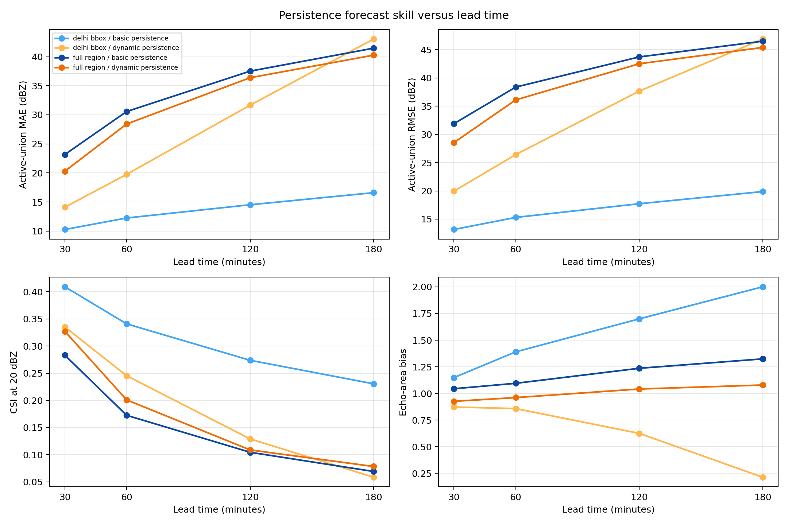

2021–25 accumulation archive
Monthly accumulation animations provide a broad view of timing and spatial pattern across the Delhi core and the wider NCR radar domain.


29 July 2025: composite QPE
A one-day monsoon case study using 129 IMD-B and 128 IMD-C volumes. Each regular target uses the nearest scan within ±7.5 minutes.
For the nine eligible calibration stations, leave-one-station-out correction reduced matched-total MAE from 69.0 mm to 13.9 mm. This is an exploratory, one-day calibration—not an independently validated operational QPE model.



How to read these products
The visualizations are intentionally accompanied by their key assumptions, scope, and limits so they can be used responsibly.
Event-study method
- Composite
- Pixelwise maximum across 13 radar elevation layers.
- QPE relation
- Marshall–Palmer Z = 200R1.6, with a 15 dBZ dry threshold and 53 dBZ cap.
- Integration
- 10-minute rain-rate intervals over the complete IST civil day.
- Bias correction
- Gauge/radar ratios spatially interpolated using inverse-distance weighting.
- Forecast reference
- Dynamic persistence combines echo motion with low-elevation Doppler-velocity information.

Important archive caveats
The 2021–25 animations are raw, uncalibrated Marshall–Palmer QPE: use them for spatial pattern and timing, not absolute rainfall comparisons. The 2021–24 and 2025 radar formats are not calibration-consistent; values across the 2024|2025 boundary are not directly comparable. Near-radar clutter is interpolated within a 10 km cone, and dry-season near-radar signal can include non-meteorological echo. Monsoon frames are the most meaningful signal.